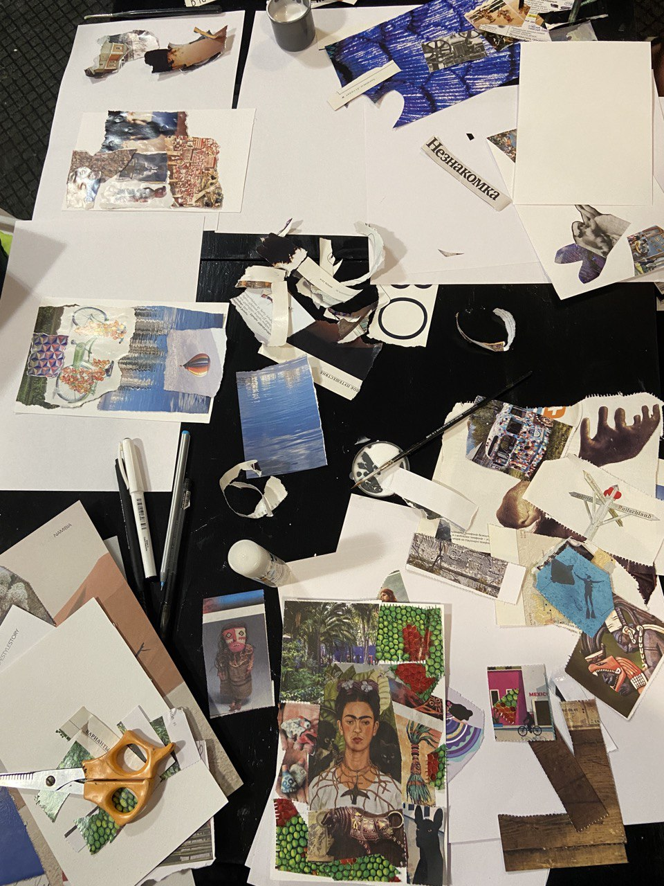

Творчество, природа и терапия для тех, кто устал от экранов и хочет вернуться к себе
Я соединяю психологию, искусство и живой ландшафт, чтобы помочь вам снизить стресс, восстановить внимание и вернуть интерес к миру и к себе без гонки и оценок.

Главная страница — мягкое введение
Здесь вы можете почувствовать общий ритм моей работы: соединение творчества, природы и психологической поддержки. Остальные разделы раскрывают терапию творчеством, арт‑прогулки и скетчинг подробнее.
Выберите то, что откликается, или просто начните с короткого письма о себе — мы вместе подберём формат.


Кто я и как работаю
Меня зовут Алина Сумченко, творческий псевдоним – Алина Алая. Я психолог, арт‑терапевт и художница. Много лет я была прежде всего художницей: училась в школе при Академии художеств им. Репина в Санкт‑Петербурге, участвовала в выставках и кураторских проектах в России и Европе.
В своём искусстве я возвращаюсь к человеку – его телу, мифам, внутренним мирам и тому, как бессознательное проявляется через форму, ритм и цвет. Терапия творчеством стала естественным продолжением этого пути: я опираюсь на художественный опыт, психологию и практики работы с природой.
В работе для меня важны безопасное пространство, уважение к вашему темпу и мягкое исследование через образ, метафору и тело.


Это для вас, если вы
- чувствуете усталость от экранов и информационную перегрузку;
- хотите улучшить концентрацию и внимание;
- переживаете эмоциональную усталость, тревогу, выгорание, потерю интереса;
- хотите внимательнее относиться к своим эмоциям и внутреннему состоянию;
- хотите лучше чувствовать тело и его сигналы;
- замечаете, что вам легче говорить через образ, чем только словами.
Форматы работы
Терапия творчеством
Индивидуальная психологическая работа через рисунок, коллаж, текстиль, текст и фотографии для тех, кто ищет мягкую, бережную поддержку и глубину.
Арт‑прогулки и дневник наблюдений
Прогулки и небольшие практики, которые помогают восстановить внимание, снизить ощущение перегрузки и вернуть живой интерес к миру вокруг.
Скетчинг и мастер‑классы
Скетчбук, зарисовки города и природы, интуитивная абстракция и авторские мастер‑классы без оценок и «правильно/неправильно».
Для меня природа – это не фон, а живой собеседник, в котором спрятаны наши корни и мифы. Когда мы выходим из экрана в ландшафт, тело постепенно вспоминает свой ритм: дыхание выравнивается, шаг становится ощутимым, взгляд перестаёт скользить и задерживается на деталях. Через творчество на природе – скетчи, заметки, абстрактные пятна – человек заново выстраивает отношения с землёй и своим телом, открывая более цельное ощущение своей идентичности и присутствия в мире.
Психологическая работа через искусство
Терапия творчеством – это форма психологической работы, где художественные средства становятся языком для диалога с собой и бессознательным. Через рисунок, коллаж, текстиль, скульптуру, текст или фотографию можно выразить то, что сложно сказать словами, увидеть свои истории в новом свете и найти опоры.
В моём подходе важен не результат на бумаге, а ваш опыт: ощущения, ассоциации, символы и смыслы, которые проявляются в процессе.
Для кого
- если вы чувствуете эмоциональную перегрузку, усталость, тревогу;
- если вам сложно говорить о чувствах напрямую, но легче выражать их через образ;
- если вы переживаете изменения, потери, кризисы и ищете мягкий способ прожить этот опыт;
- если вы ощущаете цифровую усталость, трудности с концентрацией и хотите восстановить внимание;
- если вам близки символ и метафора, и вы чувствуете внутренний запрос на творчество.
Инструменты
Коллаж и образы
Собираем фрагменты опыта в целостный визуальный образ и по‑новому видим свои состояния.

Текстиль и куклотерапия
Работа с тканью, фактурами и фигурой помогает лучше ощущать тело, его границы и поддержку.
Объекты и скульптуры
Создаём объёмные формы, чтобы «потрогать» своё состояние и придать ему символическую форму.
Креативное письмо и сказки
Короткие тексты и истории дают голос внутренним частям и помогают мягко переработать переживания.

Фототерапия
Работа с личными и метафорическими фотографиями помогает по‑новому увидеть себя и пространство.
Абстракция и интуитивное рисование
Опираемся на цвет, ритм линии и ощущения в теле, чтобы мягко выражать сложные состояния.

Как проходит работа
- Первая встреча – знакомство, обсуждение запроса, выбор формата работы.
- На сессиях мы чередуем творчество и разговор, опираясь на ваш темп и границы.
- В конце каждой встречи мы подводим итоги и смотрим, что можно забрать с собой в повседневную жизнь.
Арт‑прогулки и творческий дневник наблюдений
Что такое арт‑прогулка
Арт‑прогулка – это маршрут по городу или природному пространству, где мы соединяем движение, наблюдение и простые творческие задания. Вместо привычного «пролистывания» дня мы замедляемся, замечаем детали и фиксируем их в виде скетчей и коротких записей, возвращаясь из цифрового шума к живому миру вокруг.
Творческий дневник наблюдений
«Творческий дневник наблюдений» – моя авторская методика, которая помогает вернуть вниманию глубину и устойчивость через наблюдение, рисование и короткие записи от руки.
Примеры упражнений:
- выбрать один объект и сделать несколько быстрых скетчей с разных точек, отмечая форму, тени и фактуру;
- заметить три детали, на которые вы раньше не обращали внимания, и описать их несколькими словами и линиями;
- зафиксировать своё состояние «до» и «после» прогулки абстрактными пятнами и короткими фразами.
Форматы
- Индивидуальные арт‑прогулки в Льорет‑де‑Мар и окрестностях;
- Небольшие группы (по расписанию);
- Онлайн‑сопровождение по дневнику наблюдений.

Живой скетчбук и творческие встречи
Скетчинг в моей практике – способ смотреть на мир и на себя внимательнее, а не экзамен по умению рисовать. Через быстрые зарисовки города, природы и повседневных сцен мы тренируем наблюдательность, присутствие в моменте и честную фиксацию того, что откликается именно вам.
Эти занятия не являются психотерапией, но создают поддерживающее пространство, где можно отдохнуть от оценок, вернуть творческий интерес и собрать живой визуальный архив.
Форматы скетчинга
Городской скетчинг
Прогулки по городу с быстрыми зарисовками архитектуры, людей и повседневных сцен.

Скетчбук путешественника
Скетчи в музеях, у достопримечательностей и в особых для вас местах – личная карта памяти.

Ботанические и природные зарисовки
Рисование деревьев, растений и фрагментов ландшафта помогает замедлиться и ближе почувствовать природу.

Интуитивная абстракция
Абстрактное и интуитивное рисование на основе цвета и движения руки для исследования внутренних состояний.

Этюды на природе
Выразительная живопись или графика на пленэре – работа со светом, цветом и настроением места.

Индивидуальные занятия
Занятия в мастерской или на природе: фигура человека, архитектура, ботаника и другие темы по запросу.
Образовательные творческие мастер‑классы
- Дизайн винной этикетки – авторский мастер‑класс о визуальном языке упаковки и создании собственной этикетки от идеи до макета.
- Тематические творческие встречи – сезонные занятия, связанные с временем года, местом и настроением (вечера скетчинга, рисование вином, арт‑встречи на природе).
- Групповые коллаж‑сессии – занятия с коллажем и визуальными историями в безопасной, поддерживающей атмосфере.
Контакты и запись
Я живу и работаю в Льорет‑де‑Мар (Коста‑Брава, Испания). Работаю очно и онлайн.
Если вам откликается мой подход, напишите несколько строк о себе и своём запросе. Я отвечу, задам уточняющие вопросы и предложу формат первой встречи или арт‑программы.
Связаться со мной
Telegram: @alinaalay
Телефон: +34 641 806 105
Формат работы и оплата
- Формат: индивидуальные онлайн‑сессии и очные встречи в Льорет‑де‑Мар.
- Длительность: обычно 1–2 часа (обсуждаем индивидуально перед началом работы).
- Частота: по договорённости, в зависимости от вашего запроса и ресурсов.
- Оплата: стоимость обсуждается индивидуально и сообщается по запросу.
Отмена и перенос
Если вы понимаете, что не сможете прийти на встречу, пожалуйста, сообщите об этом не позднее чем за 24 часа. При отмене позже этого срока сессия может считаться проведённой, кроме случаев форс‑мажора. Перенос возможен по договорённости на ближайшее свободное время.
Форма записи
Если вы хотите записаться на встречу или задать вопрос, заполните короткую форму. Напишите пару слов о себе и о том, что сейчас для вас важно.